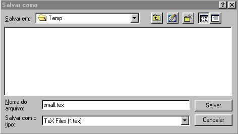
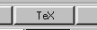
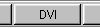
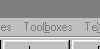
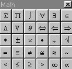
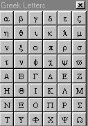
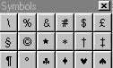
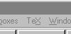

Introdução ao LATEX
Reginaldo J. Santos
Departamento de Matemática
Instituto de Ciências Exatas
Universidade Federal de Minas Gerais
http://www.mat.ufmg.br/~regi
Conteúdo
0 Introdução
1 Texto, Comandos e Ambientes
1.1 Um aviso
1.2 Estrutura Básica de um Arquivo Fonte LATEX
2 Diferentes Formas de Exibição de Texto
2.1 Mudando o Tipo das Letras
2.2 Centralizando e Indentando
2.3 Listas
2.4 Teoremas, Proposições, etc
3 Fórmulas Matemáticas
3.1 Principais Elementos do Modo Matemático
3.2 Expoentes e Índices
3.3 Frações
3.4 Raízes
3.5 Somatórios e Integrais
3.6 Pontos, Espaços e Texto no Modo Matemático
3.7 Símbolos Matemáticos
3.8 Funções Matemáticas
3.9 Fórmulas com Til, Barra, Chapéu, etc
3.10 Tamanho automático de parênteses e similares
3.11 Matrizes
3.12 Equações ou Inequações Multi-linhas
3.13 Fórmulas dentro de uma Moldura
3.14 Mudança dos Tipos de Letras no Modo Matemático
3.15 Espaços no Modo Matemático
3.16 Usando o MATLAB para Gerar Fórmulas
24 Figuras
4.1 Ambiente picture
4.2 Figuras Importadas de Outros Programas
4.3 Ambiente figure
5 Partes do Documento
5.1 Título
5.2 Seções
5.3 Conteúdo
5.4 Bibliografia
5.5 Índice Alfabético
6 Outros Recursos
6.1 Referências Cruzadas
6.2 Espaçamento
Espaçamento Horizontal
Espaçamento Vertical
6.3 Dividindo o Arquivo Fonte
6.4 Tabelas
0. Introdução
O LATEX é um pacote feito para a preparação de textos
impressos de alta qualidade, especialmente para textos
matemáticos.
Ele foi desenvolvido por Leslie Lamport a partir do programa
TEX criado por Donald Knuth.
Podemos dividir os programas de processamento de texto em
du2as classes. Com os chamados processadores de
texto, existe um menu na tela apresentando os recursos, que
podem ser usados no processamento do texto, que por sua vez
podem ser selecionados com o uso do mouse. Depois de
selecionado um recurso, o texto é digitado e aparece na tela
exatamente como vai ser impresso no papel. O usuário pode
ver logo no estágio de entrada do texto, se o texto será
impresso como esperado. Este método é chamado
``what-you-see-is-what-you-get'' ou simplesmente WYSWYG.
A segunda classe, que é a que pertence o LATEX, o
processamento do texto é feito em duas etapas distintas. O
texto a ser impresso e os comandos de formatação são
escritos em um arquivo fonte com o uso de um
editor de textos, isto é, um programa que escreve
textos em meio magnético. Em seguida o arquivo fonte é
submetido a um programa formatador de textos, no nosso caso
o LATEX, que gera um arquivo de saída, que pode ser
impresso ou visualizado na tela. Programas deste tipo podem
parecer inicialmente mais complicados do que os do outro
tipo, mas apresentam uma série de vantagens em relação aos
processadores de texto, como por exemplo:
- Mudanças na formatação do texto
inteiro com apenas a mudança de alguns comandos.
- Escrita de fórmulas complexas usando apenas comandos,
por exemplo, ò0a e-x2dx, é impressa com o
comando
$\int_{0}^a e^{-x^2}dx$;
- Numeração automática de fórmulas, seções, definições,
exemplos e teoremas, o que permite que você faça mudanças na
ordem do texto sem que seja necessário trocar os números dos
itens.
- As citações a fórmulas, seções, definições,
exemplos, teoremas além de citações bibliográficas também
podem ser automatizadas, de forma que mudanças no texto não
produzem erros nas citações.
O
LATEX é
um programa de domínio púplico, por isso existem
várias implementações. Vamos usar uma implementação chamada
MikTEX, uma interface gráfica junto com um editor de
textos chamada, TEXShell, e um visualizador, YAP. Todos
estes programas são ``freeware'', isto é, são gratuítos e
podem trabalhar juntos como se fossem um só, mas é
necessário configurá-los para que isto aconteça. Estamos
disponibilizando uma versão já configurada que pode ser
instalada simplesmente descompactando certos arquivos. Para
isto, siga os passos que estão em
http://www.mat.ufmg.br/~regi/latex/instlat2.html.
Para começar a usar o LATEX você deve clicar em Iniciar, depois
em Programas, depois em MikTeX e finalmente clicar em
TeXShell.
Depois de inicializado o TEXShell, a primeira coisa a fazer
é abrir um arquivo no editor do TEXShell. Para isto, no menu,
escolha Open... e o nome do arquivo existente ou
New e ele inicia um novo arquivo.
Aqui está um pequeno arquivo exemplo, que você pode usar como modelo para os
seus arquivos.
Para isto marque o seu conteúdo com o mouse e cole-o
no TeXShell.
%ARQUIVO small.tex
% Este é um pequeno arquivo fonte para o LaTeX (versão de 11 de setembro de 2000)
%
% Use este arquivo como modelo para fazer seus próprios arquivos LaTeX.
% Tudo que está à direita de um % é um comentário e é ignorado pelo LaTeX.
%
\documentclass[a4paper,12pt]{article}% Seu arquivo fonte precisa conter
\usepackage[brazil]{babel} % estas quatro linhas
\usepackage[latin1]{inputenc} % além do comando \end{document}
\begin{document} % no fim.
\section{Texto, Comandos e Ambientes} % Este comando faz o título da seção.
Um arquivo fonte do \LaTeX\ contem além do texto a ser
processado, comandos que indicam como o texto deve ser
processado. Palavras são separadas por um ou mais espaços.
Parágrafos são separados por uma ou mais linhas em branco. A
saída não é afetada por espaços extras ou por linhas em
branco extras. A maioria dos comandos do \LaTeX \ são
iniciados com o caracter $\backslash$. Uma $\backslash$
sozinha produz um espaço. Um ambiente é uma região do texto
que tem um tratamento especial. Um ambiente é iniciado com\\
\texttt{$\backslash$begin\{nome do ambiente\}} e terminado
por \texttt{$\backslash$end\{nome do ambiente\}}.
%Aspas são digitadas assim:
``Texto entre aspas''.
%Texto em itálico deve ser digitado como:
\textit{Isto está em itálico}.
%Texto em negrito deve ser digitado como:
\textbf{Isto está em negrito}.
\subsection{Um aviso} % Este comando faz o título da subseção.
Lembre-se de não digitar nenhum dos 10 caracteres especiais
% & $ # % _ { } ^ ~ \
\& \$ \# \% \_ \{ \} \^{} \ \~{}\ $\backslash$
exceto como um comando! Eles são impressos
com os comandos
%Este comando inicia um ambiente ``verbatim''(ao pé da letra)
\begin{verbatim}
\& \$ \# \% \_ \{ \} \^{} \~{} $\backslash$.
\end{verbatim}
%Este comando termina o ambiente ``verbatim''.
%Tudo que estiver dentro deste ambiente é impresso
%exatamente como é digitado
\end{document} % O arquivo fonte termina com este comando.
Grave o novo arquivo em uma pasta,
por exemplo, em c:\windows\temp. Para isso,
no menu, escolha
File e depois
Save as:. Escreva na caixa Nome do Arquivo:
small.tex.

Para que este arquivo seja processado pelo LATEX, você precisa definir
Arquivo Principal. Para isto, você
deve no menu, escolher File e depois, Main
File (ou simplesmente tecle F4) e na caixa
File Name: escreva, por exemplo,
small.tex.
Vai aparecer na barra de status (em baixo) o nome
do arquivo escolhido. Com isto, você já pode processar este
arquivo através do LATEX.
Para processar o arquivo
principal (aquele que aparece na barra de ferramentas)
através do
LATEX, basta clicar na barra de ferramentas no botão
. Depois de terminado o processamento,
para visualizar o resultado (arquivo de saída
small.dvi), basta clicar no botão
.
Na próxima seção está um conjunto de informações básicas e
em seguida está a listagem de como poderia ser um arquivo
fonte para imprimí-las. Este conteúdo está no arquivo
small.tex que você processou.
1 Texto, Comandos e Ambientes
Um arquivo fonte do LATEX contem além do texto a ser
processado, comandos que indicam como o texto deve ser
processado. Palavras são separadas por um ou mais espaços.
Parágrafos são separados por uma ou mais linhas em branco. A
saída não é afetada por espaços extras ou por linhas em
branco extras. A maioria dos comandos do LATEX são
iniciados com o caracter \. Uma \
sozinha produz um espaço. Um ambiente é uma região do texto
que tem um tratamento especial. Um ambiente é iniciado com
\begin{nome do ambiente} e terminado
por \end{nome do ambiente}.
``Texto entre aspas''.
Isto está em itálico.
Isto está em negrito.
1.1 Um aviso
Lembre-se de não digitar nenhum dos 10 caracteres especiais
& $ # % _ { } ^ ~ \ exceto como um comando! Eles são impressos
com os comandos
\& \$ \# \% \_ \{ \} \^{} \~{} $\backslash$.
1.2 Estrutura Básica de um Arquivo Fonte LATEX
Todo arquivo fonte LATEX, que normalmente tem a extensão
.tex tem um preâmbulo e um corpo.
No preâmbulo estão comandos que especificam parâmetros
globais para o processamento do texto, tais como tipo de
documento, formato do papel, altura e largura do texto, a
forma de saída das páginas com a sua paginação e cabeçalhos
automáticos. O preâmbulo deve conter pelo menos o comando
\documentclass. Se não existem outros
comandos no preâmbulo, então LATEX seleciona valores
standard para as várias variáveis que determinam o formato
global do texto.
O preâmbulo termina com o comando
\begin{document}. Tudo que fica abaixo
deste comando é interpretado como corpo. No corpo fica o
texto propriamente dito junto com comandos adicionais, que
só têm efeito local.
O corpo termina com o comando
\end{document}. Isto também é
normalmente o fim do arquivo fonte.
\documentclass[opções]{tipo}
Comandos globais
\begin{document}
Texto junto com comandos de efeito local
\end{document}
O tipo pode ser: article, report, book ou
letter. Algumas das opções são: 10pt, 11pt
ou 12pt para o tamanho base das letras usadas no
texto, a4paper se o papel for A4 (para o papel
letter, não é necessário nenhuma indicação) e
twocolumn para a impressão em duas colunas.
Alguns exemplos de comandos globais:
\usepackage[brazil]{babel}
indica para usar o pacote babel, com a opção de
língua brazil, faz com que ele gere datas e nomes
como Capítulo, Bibliografia em português com estilo
brasileiro.
\usepackage{graphicx}
indica para usar o pacote graficx, que permite
entre outras co
isas incluir figuras.
\usepackage[T1]{fontenc}
indica para usar o pacote fontenc com a opção
T1, que define uma codificação para os caracteres
em que os acentos são digitados diretamente pelo teclado.
\usepackage{amsthm,amsfonts}
indica para usar os pacotes da American Mathematical Society
amsthm e amsfonts. O primeiro, entre outras
coisas, define um estilo para a escrita dos teoremas e o
segundo adiciona alguns estilos de letras, por exemplo
 foram geradas com
$\mathbb{R}$,
$\mathbb{C}$ e $\mathbb{N}$ por causa da adição deste
pacote.
foram geradas com
$\mathbb{R}$,
$\mathbb{C}$ e $\mathbb{N}$ por causa da adição deste
pacote.
\setlength{\textwidth}{6 in}
indica que a largura do texto é de 6 polegadas.
\setlength{\textheight}{23 cm}
indica que a altura do texto é de 23 cm.
\evensidemargin 0 in
indica que a margem esquerda das páginas pares é zero.
\oddsidemargin 0.25 in
indica que a margem esquerda das páginas ímpares é 0.25 polegadas.
Além destes um comando que pode ser útil é o
\newcommand. Com ele você pode definir nomes
mais simples para comandos que têm nomes grandes. Por
exemplo:
\newcommand{\binv}{$\backslash$}
dá um novo nome para o comando que imprime \.
\newcommand{\pot}{\^{}}
cria um novo nome para o comando que imprime ^.
\newcommand{\til}{\~{}}
define um novo nome para o comando que imprime ~.
2 Diferentes Formas de Exibição de Texto
O LATEX permite uma variedade de formas de exibição de
texto: pode-se mudar o tamanho e o tipo das letras, pode-se
centralizar, criar diferentes tipos de listas, etc.
2.1 Mudando o Tipo das Letras
- Mudando o estilo:
\textit{itálico} produz itálico;
\textbf{negrito} produz negrito;
\textrm{romano} produz romano;
\textsf{sans serif} produz sans serif;
\texttt{máquina de escrever} produz máquina de escrever;
\textsc{caixa alta} produz CAIXA ALTA.
- Mudando o tamanho:
{\tiny o menor} produz o menor;
{\scriptsize muito pequeno} produz muito pequeno;
{\footnotesize menor} produz menor;
{\small pequeno} produz pequeno;
{\large grande} produz grande;
{\Large maior} produz maior;
{\LARGE maior ainda} produz maior ainda;
{\huge ainda maior} produz ainda maior;
{\Huge o maior de todos} produz o maior de todos.
2.2 Centralizando e Indentando
- Centralizando:
\begin{center}
linha 1 \\
segunda linha
\\
\ldots
\\
linha n
\
end{center}
produz
linha 1
segunda linha
...
linha n
- Indentando:
\begin{quote} Texto a ser indentado.
\end{quote}
produz
Texto a ser indentado.
2.3 Listas
As listas são construidas com ambientes:
- Ambiente itemize
\begin{itemize}
\item Os itens são precedidos por $\bullet$;
\item Os itens são separados por um espaço adicional.
\end{itemize}
produz
- Os itens são precedidos por ·;
- Os itens são separados por um espaço adicional.
- Ambiente enumerate
\begin{enumerate}
\item Os itens são numerados com algarismos arábicos, no primeiro nível,
\begin{enumerate}
\item são numerados com letras no segundo nível e
\begin{enumerate}
\item são numerados com algarismos romanos no terceiro nível.
\end{enumerate}
\end{enumerate}
\end{enumerate}
produz
- Os itens são numerados com algarismos arábicos, no primeiro nível,
- são numerados com letras no segundo nível e
- são numerados com algarismos romanos no terceiro nível.
2.4 Teoremas, Proposições, etc
O comando
\newtheorem{ambiente}{título}
define
um ambiente para a escrita de teoremas, proposições, etc,
onde
ambiente é um apelido para o ambiente e
título é o título que será impresso no início do
texto, como Teorema, Lema, Corolário, etc. Por
exemplo:
\newtheorem{teo}{Teorema}[section]
\newtheorem{lema}[teo]{Lema}
\newtheorem{cor}[teo]{Corolário}
\newtheorem{prop}[teo]{Proposição}
define quatro ambientes com apelidos teo, lema, cor
e prop. A numeração é automática e o argumento
[teo] faz com que os outros ambientes sigam a
numeração do ambiente teo. O argumento
[section] faz com que apareça o número da seção
junto ao número do teorema.
Uma vez definidos os ambientes no corpo do arquivo fonte,
eles podem ser chamados em qualquer ponto após a definição
dos ambientes, como no exemplo seguinte:
\begin{teo}[Pitágoras]
Em todo triângulo retângulo o quadrado do comprimento da
hipotenusa é igual a soma dos quadrados dos comprimentos dos
catetos.
\end{teo}
produz
Teorema 2.1 (Pitágoras).
Em todo triângulo retângulo o quadrado do comprimento da
hipotenusa é igual a soma dos quadrados dos comprimentos dos
catetos.
3 Fórmulas Matemáticas
3.1 Principais Elementos do Modo Matemático
Fórmulas matemáticas são produzidas digitando no arquivo
fonte texto descrevendo-as. Isto significa que o LATEX deve ser informado que o texto que vem a seguir é uma
fórmula e também quando ela termina e o texto normal
recomeça. As fórmulas podem ocorrer em uma linha de texto
como ax2+bx+c = 0, ou destacada do texto principal como

No meio do texto o modo matemático é iniciado e terminado
com o sinal $. A primeira fórmula acima foi
produzida com $ax^2+bx+c=0$. Quando a fórmula
é destacada, então o modo matemático é iniciado e terminado
com $$. A segunda fórmula acima foi produzida com
$$
x=\frac{-b\pm\sqrt{b^2-4ac}}{2a}.
$$
As fórmulas destacadas podem ser numeradas usando o ambiente
\begin{equation} equação
\end{equation}. Por exemplo
\begin{equation}
x=\frac{-b\pm\sqrt{b^2-4ac}}{2a}.
\end{equation}
produz
 Fórmulas com várias linhas podem ser produzidas com os
ambientes
Fórmulas com várias linhas podem ser produzidas com os
ambientes
\begin{eqnarray}
equação 1 \\
... \\
equação n
\end{eqnarray},
que numera as equações e trocando eqnarray por
eqnarray* as equações não são numeradas.
Para que apenas algumas das equações não sejam numeradas
usamos o comando \nonumber no final de
cada equação que não deve ser numerada.
Os espaços digitados nas fórmulas são ignorados pelo
LATEX. Os símbolos matemáticos:
+ - = < > / : ! ' | [ ] ( )
podem ser digitados diretamente do teclado.
Por exemplo:
|x| < a se, e somente se, -a < x < a
foi produzido com
$|x |<a$ se, e somente se, $-a <x<a$
As chaves
{ } servem para agrupar logicamente partes
da fórmula e não são impressas diretamente. Para incluir
chaves em uma fórmula tem que ser usados
\{ e
\}.
3.2 Expoentes e Índices
O LATEX permite, de maneira simples, a produção de
qualquer combinação de expoentes e índices com o tamanho
correto. O caracter ^ indica que o próximo
caracter é um expoente e _ indica que o próximo
carcter é um índice. Por exemplo:
$$x^2, a_n, x_i^2, x^2_i, x^{2n}, x^{y^2}, x^{y_1}$$
produz
|
x2, an, xi2, xi2, x2n, xy2, xy1 |
|
Observe que quando índices e expoentes ocorrem juntos a
ordem é indiferente. Observe também que quando o índice ou
expoente tem mais de um caracter, eles devem estar dentro de
chaves.
3.3 Frações
Pequenas frações no meio do texto podem ser escritas usando
o caracter /, como $(a+b)/2$, que produz
(a+b)/2. Para frações mais complexas o comando
\frac{numerador}{denominador}
é empregado para escrever o numerador em cima e o
denominador em baixo com um traço de fração entre eles. Por
exemplo, $\frac{(a+b)}{2}$ produz
 . Para
que uma fórmula que aparece no meio do texto apareça maior
usamos o comando
\displaystyle no início da fórmula. Por exemplo,
$\displaystyle\frac{(a+b)}{2}$ produz
. Para
que uma fórmula que aparece no meio do texto apareça maior
usamos o comando
\displaystyle no início da fórmula. Por exemplo,
$\displaystyle\frac{(a+b)}{2}$ produz
 .
.
3.4 Raízes
As raízes são produzidas com o comando
\sqrt[n]{radicando}
Por exemplo, $\sqrt[3]{8}=2$ produz
3Ö8 = 2. Se o argumento opcional [n] for
omitido, então a raiz quadrada é gerada. Por exemplo,
$\sqrt{4}=2$ produz Ö4 = 2.
O tamanho e o comprimento do radical são automaticamente
ajustados ao tamanho do radicando.
3.5 Somatórios e Integrais
Somatórios e integrais são obtidos com os comandos
\sum e \int, respectivamente.
Eles podem aparecer em diferentes estilos, dependendo se
aparecem no meio do texto ou destacado. Por exemplo,
$\sum_{i=1}^n a_i$ e $\int_{a}^b
f(x)dx$ produzem åi = 1n ai e òab f(x)dx
respectivamente, enquanto $$\sum_{i=1}^n a_i$$ e
$$\int_{a}^b f(x)dx$$
produzem
e
respectivamente. Assim como no caso das
frações, para que o somatório ou a integral no meio do texto
tenha uma saída como teria se estivesse em destaque usamos o
comando
\displaystyle no início da fórmula.
3.6 Pontos, Espaços e Texto no Modo Matemático
O comando \ldots produz três pontos,
como em a1+¼+an, que foi produzida com
$a_1+\ldots + a_n$. Os comandos
\quad e \qquad produzem espaços
no modo matemático, sendo o último maior do que o primeiro,
para o caso de escrita de duas fórmulas sem sair do modo
matemático. O comando \mbox deve ser
usado para produzir texto no modo matemático. Por exemplo,
$$x_1=\frac{-b-\sqrt{b^2-4ac}}{
2a}\quad\mbox{e}\quad
x_2=\frac{-b+\sqrt{b^2-4ac}}{2a}.$$
produz

3.7 Símbolos Matemáticos
O TEXshell oferece a possibilidade de, com o uso do mouse,
se inserir os comandos que geram os símbolos matemáticos.
Para isso, vá até o menu e clique em
Toolboxes.

Os símbolos estão divididos em:
Math para
Símbolos Matemáticos, como
£ , ³ , ¹ , Ì , É , Î , » ,
que foram produzidos com
$\le,\quad\ge,
\quad\neq,\quad
\subset,\quad
\supset,\quad\in,
\quad\approx$.
As negações destas
relações podem ser conseguidas acrescentando o comando
\not antes da relação.

Greek Letter para as letras gregas, como
a, b, g, d, q, W
que foram produzidas com
$\alpha,\quad
\beta,\quad\gamma,
\quad\delta,\quad
\theta,\quad\Omega$.

Symbol para outros símbolos.

3.8 Funções Matemáticas
São usadas tipos de letras diferentes para variáveis e para
nomes de funções. Por exemplo,
$\cos x$ produz cos x.
enquanto $cos x$ produz cosx. Muitos nomes de
funções já estão definidos, bastando para chamá-los usar uma
\ antes do nome (principalmente aquelas em que o
nome em português é o mesmo que em inglês). Para outros
nomes é necessário definí-los. Por exemplo,
\newcommand{\sen}{\mathrm{sen}}
\newcommand{\dist}{\mathrm{dist}}
no preâmbulo do arquivo fonte define o nome das funções
sen e dist. Depois de definidas, podemos usar como em
sen x e sen(x), que foram produzidos com
$\sen\,x$ e $\sen(x)$,
respectivamente. Alguns nomes de funções prédefinidos são:
\arccos, \arctan, \cos, \cosh,
\cot, \coth, \csc,
\det, \exp, \lim,
\ln, \log, \max,
\min, \sec, \tan,
\tanh. Por exemplo, para se conseguir
 deve-se
escrever
$\lim_{x\to 0}\frac{\sen(x)}{x}$.
deve-se
escrever
$\lim_{x\to 0}\frac{\sen(x)}{x}$.
3.9 Fórmulas com Til, Barra, Chapéu, etc
Os comandos \overline{fórmula} e
\underline{fórmula} servem para colocar barras
em cima e em baixo de uma letra ou uma fórmula. Por exemplo,
 foi
conseguido com
$\overline{a}^2+\underline{bc}$.
Pode-se colocar também chaves em cima e em baixo de fórmulas
com os comandos \overbrace{fórmula} e
\underbrace{fórmula}. Por exemplo,
foi
conseguido com
$\overline{a}^2+\underline{bc}$.
Pode-se colocar também chaves em cima e em baixo de fórmulas
com os comandos \overbrace{fórmula} e
\underbrace{fórmula}. Por exemplo,
 foi
obtida com
$\overbrace{x_1+\underbrace{x_2+\ldots+x_{n-1}}_{n-2}+x_n}^n$. Setas em cima de
letras são conseguidas com o comando
\vec{letra}, como em
foi
obtida com
$\overbrace{x_1+\underbrace{x_2+\ldots+x_{n-1}}_{n-2}+x_n}^n$. Setas em cima de
letras são conseguidas com o comando
\vec{letra}, como em
 , que foi
obtido com
$\vec{v}$. Chapéu e til em cima de letras
são conseguidas com os comandos \hat,
\widehat, \tilde e
\widetilde. Por exemplo,
, que foi
obtido com
$\vec{v}$. Chapéu e til em cima de letras
são conseguidas com os comandos \hat,
\widehat, \tilde e
\widetilde. Por exemplo,
 foram
conseguidos com
$\hat{A}$ e
$\widehat{ABC}.
foram
conseguidos com
$\hat{A}$ e
$\widehat{ABC}.
3.10 Tamanho automático de parênteses e similares
Os comandos \left( e
\right) produzem parênteses com
tamanho ajustado na altura para conter a fórmula que é
englobada por eles. Observe a diferença entre
 foram
obtidos com
$\cos(\frac{\pi}{2}x^2)$ e
$\cos\left(\frac{\pi}{2}x^2\right)$
respectivamente. O mesmo acontece com colchetes e chaves,
usando os comandos
\left[, \right],
\left\{ e \right\}.
Os comandos \left e
\right devem aparecer sempre aos
pares.
foram
obtidos com
$\cos(\frac{\pi}{2}x^2)$ e
$\cos\left(\frac{\pi}{2}x^2\right)$
respectivamente. O mesmo acontece com colchetes e chaves,
usando os comandos
\left[, \right],
\left\{ e \right\}.
Os comandos \left e
\right devem aparecer sempre aos
pares.
3.11 Matrizes
As matrizes são produzidas com o uso do ambiente
array. Os elementos de uma mesma linha são
separados pelo caracter & e as linhas são separadas por
\\. É necessário passar para o
LATEX como as colunas devem ser alinhadas. Isto é feito em
seguida ao comando que inicia o ambiente. Por exemplo,
\begin{array}{ccrll} diz ao LATEX que a matriz tem 5 colunas e que as duas primeiras devem ser
alinhadas ao centro, que a do meio deve ser alinhada à
direita e que as duas últimas devem ser alinhadas à
esquerda. Por exemplo, as matrizes
|
A = |
é
ê
ë
|
|
| |
ù
ú
û
|
, B = |
é
ë
|
|
| |
ù
û
|
, e C = |
é
ê
ê
ê
ê
ë
|
|
| |
ù
ú
ú
ú
ú
û
|
|
|
foram conseguidas com
$$
A=\left[\begin{array}{rrr}
1&3&0\\
2&4&-2
\end{array}\right],\quad
B=\left[\begin{array}{ccc}
1&3&-2
\end{array}\right],
\quad \mbox{e}\quad
C=\left[\begin{array}{r}
1\\4\\-3
\end{array}\right]
$$
Um outro exemplo do uso do ambiente array é
$$|x|=\left\{\begin{array}{rc}
-x&\mbox{se}\quad x\le 0\\
x &\mbox{se}\quad x>0
\end{array}\right.
$$
Observe o uso do comando \right. para
fechar o comando \left{.
3.12 Equações ou Inequações Multi-linhas
Para a impressão de equações ou inequações em várias linhas
pode-se usar os seguintes ambientes:
\begin{eqnarray}
linha 1 \\
... \\
linha n
\end{eqnarray},
\begin{eqnarray*}
linha 1 \\
... \\
linha n
\end{eqnarray*},
As linhas são separadas umas das outras por
\\ e cada linha tem a forma
|
fórm. da esq. & fórm. do centro & fórm. da dir<
i>eita |
|
Normalmente a fórmula do centro é um único caracter, o
sinal da relação (por exemplo, = ou £ ).
A diferença entre eqnarray e eqnarray* é
que no primeiro são acrescentadas às linhas números de equações.
O efeito
deste ambiente é semelhante ao de se usar
\begin{array}{rcl} ... \
end{array}. Exemplo:
foi obtido com
\begin{eqnarray}
(A+B)(A-B)&=&(A+B)A+(A+B)(-B)\nonumber\\
&=&AA+BA-AB-BB\nonumber\\
&=&A^2+BA-AB-B^2
\end{eqnarray}
Observe o uso de \nonumber nas linhas
que não devem ser numeradas.
3.13 Fórmulas dentro de uma Moldura
As fórmulas podem ser colocadas dentro de uma moldura com o
comando \fbox. Exemplo:

foi conseguido com
\begin{center}
\fbox{$\displaystyle x=\frac{-b\pm\sqrt{b^2-4ac}}{2a}$}
\end{center}
3.14 Mudança dos Tipos de Letras no Modo Matemático
Uma mudança explícita nos tipos de letras dentro do modo
matemático pode ser feito usando os comandos:
\mathrm, \mathcal,
\mathbf, \mathsf,
\mathtt, \mathit e
\mathbb. Por
exemplo:
$\mathrm{AaBbCc}$ produz AaBbCc,
$\mathcal{ABC}$ produz
 ,
,
$\mathbf{AaBbCc}$ produz AaBbCc,
$\mathsf{aAbBcC}$ produz aAbBcC,
$\mathtt{aAbBcC}$ produz aAbBcC,
$\mathit{aAbBcC}$ produz aAbBcC e
$\mathbb{ABCNR}$ produz
 (este
último necessita o comando
\usepackage{amsfonts} no preâmbulo).
(este
último necessita o comando
\usepackage{amsfonts} no preâmbulo).
3.15 Espaços no Modo Matemático
Além dos comandos \quad e
\qquad que produzem espaços no modo
matemático, existem comandos para produzirem espaços menores
ou até negativos.
\, produz um pequeno espaço, igual a 3/18 de
um quad.
\: produz um espaço médio, igual a 4/18 de um
quad.
\; produz um espaço maior, igual a 5/18 de um
quad.
\! produz um espaço negativo de -3/18 de um
quad.
Por exemplo,
 foram produzidos com
$x^2/2$, $x^2\!/2$,
$\int\int_D f(x)dx$ e
$\int\!\!\!\int_D f(x)\
,dx$ respectivamente.
foram produzidos com
$x^2/2$, $x^2\!/2$,
$\int\int_D f(x)dx$ e
$\int\!\!\!\int_D f(x)\
,dx$ respectivamente.
3.16 Usando o MATLAB para Gerar Fórmulas
No MATLAB existe um comando latex(expr) que gera
uma representação em LATEX da expressão simbólica
expr. Exemplo:
>> syms x, expr1=sin(x)^2+cos(x)^2;
>> latex(expr1)
ans =\left(\sin(x)\right)^{2}+\left(\cos(x)\right)^{2}
>> A=[1,2;3,4];
>> A=sym(A);
>> latex(A)
ans =\left[\begin{array}{cc}1&2\\\noalign{\medskip}3&4\end{array}\right]
Depois, basta marcar e copiar para a área de transferência,
a representação em LATEX obtida e finalmente colar no
arquivo fonte de LATEX que você está trabalhando.
4 Figuras
Podem ser construidos desenhos simples e diagramas com o
LATEX. Além disso, podem ser inseridas figuras ou imagens
geradas por outros programas.
4.1 Ambiente picture
As figuras criadas com o LATEX são construídas dentro do
ambiente
picture, cuja sintaxe é a seguinte:
\setlength{\unitlength}{unidade de comprimento}
\begin{picture}(tam_x,tam_y)
...
\end{picture}
por exemplo,
\setlength{\unitlength}{1.5 cm}
\begin{picture}(3,4) ... \end{picture}
cria uma figura de 3 x 1.5 cm=4.5 cm de largura por 4 x 1.5
cm=6 cm de altura.
Os elementos da figura são posicionados
usando-se o comando
\put(x_coord,y_coord){elemento}. Os
elementos podem ser
- \circle{diâmetro} para uma circunferência e
\circle*{diâmetro} para um círculo (cheio).
-
\line(Dx,Dy){comprimento da projeção}
para um segmento de reta, onde Dx e
Dy são números inteiros entre -6 e 6, primos
entre si (isto é, não possuem divisores comuns) e
comprimento da projeção é o comprimento da
projeção do segmento no eixo x se este for diferente de
zero ou o comprimento da projeção do segmento no eixo y,
caso contrário.
-
\vector(Dx,Dy){comprimento da
projeção}, para um vetor, onde Dx,
Dy e comprimento da projeção são
como no item anterior.
- Texto.
Exemplo:

foi produzido com
\begin{center}
\setlength{\unitlength}{1mm}
\begin{picture}(50,25)
\put(0,0){\scriptsize$C$}
\put(2,2){\circle*{0.7}}
\put(2,2){\vector(1,0){50}} %segmento CB
\put(52,2){\circle*{0.7}}
\put(52,0){\scriptsize$B$}
\put(2,2){\vector(1,1){20}} %segmento CA
\put(22,22){\circle*{0.7}}
\put(22,22.5){\scriptsize$A$}
\put(2,2){\vector(2,1){28.5}} %segmento CX
\put(34,16){\scriptsize$X$}
\put(30.5,16.25){\circle*{0.7}}
\put(22,22){\line(3,-2){30}} %segmento AB
\end{picture}
\end{center}
A espessura das linhas pode ser especificada com o comando
\linethickness{espessura}. Por exemplo, o
comando \linethickness{1.5mm} faz com
que todas as linhas desenhadas depois deste comando tenham a
espessura de 1.5 mm. Também existem os comandos com
espessuras pré-definidas:
\thicklines para linhas grossas e
\thinlines para voltar às linhas finas.
4.2 Figuras Importadas de Outros Programas
Podem ser importadas figuras de outros programas, desde
que seja usado o pacote graphicx, com o comando
\usepackage{graphicx} no preâmbulo.
O comando para incluir uma figura que esteja armazenada em
um arquivo é \
includegraphics[opções]{arquivo}. Por exemplo:
Figure 1:
Figura proveniente do arquivo exemgraf.bmp

a Figura 1 foi produzida com
\includegraphics[height=5cm,width=7cm]{exemgraf.bmp}
No MATLAB foram usados os comandos seguintes para gerar esta
figura:
>> syms x
>> f=1/(1+x^2)
f = 1/(1+x^2)
>> plotf1(f,[-10,10])
>> axis([-11 11 -0.2 1.2])
>> eixos
>> print -dbmp256 c:\users\regi\topicos\exemgraf.bmp
4.3 Ambiente figure
Este ambiente oferece a possibilidade da figura, que é
produzida com o ambiente picture ou importada com o
comando \includegraphics, ter uma
legenda e além disso, flutuar no texto se colocando num
local em que a perda de espaço seja mínima. A sintaxe é a
seguinte:
\begin{figure}[onde]
figura
\caption{Texto da figura}
\end{figure}
o argumento onde especifica o local, onde é
permitido a colocação da figura, ou seja, consiste de zero
a quatro letras com os seguintes significados:
- h significa aqui.
-
t significa em cima.
-
b significa em baixo.
-
p significa em uma página separada.
As letras devem ser colocados na ordem de prioridade. Se
nenhum argumento for dado,
LATEX assume a combinação
tbp.
Por exemplo a Figura 1 foi obtida com
\begin{figure}[htb]
\begin{center}
\includegraphics[height=5cm,width=7cm]{exemgraf.bmp}
\end{center}
\caption{Figura proveniente do arquivo \texttt{exemgraf.bmp}}
\end{figure}
O LATEX coloca a figura seguindo certos critérios. O
comando \clearpage força a que todas as
figuras pendentes (isto é, que não foram impressas até o
aparecimento do comando) sejam impressas.
5 Partes do Documento
5.1 Título
O título do documento é gerado com os comandos:
\title{texto do título}
\author{autor1\\enderêço1 \and autor2\\enderêço2}
\maketitle
Com estes comandos também a data atual é impressa. O comando
\date{texto} coloca o texto no lugar
da data atual. O comando \thanks{texto
de rodapé} pode ser colocado no texto do título, do autor
ou da data, produzindo uma marca onde o comando aparece e
escreve texto de rodapé como texto de rodapé. Se o
tipo de documento for book, então os comandos dados
acima geram uma página separada para o título do documento.
5.2 Seções
O LATEX disponhe dos comandos seguintes para produzir um
seccionamento automático e seqüencial:
\part{título} \chapter{título} \section{título}
\subsection{título} \subsubsection{título}
O comando \part está disponível apenas
para o tipo de documento book. O comando
\chapter está disponível apenas para os tipos
de documento
book e report. Os outros comandos de
seccionamento estão disponíveis para todos os tipos de
documento. Estes comandos formam um hierarquia. Os capítulos
são produzidos com \chapter, que são
divididos em seções com \section, que
são divididas em subseções com
\subsection e assim por diante. Se o tipo de documento for
book, então o comando
\chapter sempre começa o capítulo em uma nova
página e normalmente, nas páginas de números ímpares,
gerando uma página em branco se necessário. Para se evitar
que ele gere uma página em branco, inicie o documento com o
comando
\documentclass[...,oneside]{book} ou com
\documentclass[...,openany]{book}. No
primeiro caso o
LATEX entende que o documento será impresso em somente um
lado do papel e no segundo, que os capítulos podem ser
iniciados em páginas pares também.
5.3 Conteúdo
O conteúdo do documento é gerado automaticamente com o
comando \tableofcontents. Para que o
conteúdo seja gerado de forma correta é necessário que o
documento seja processado pelo LATEX pelo menos três
vezes. Se no preâmbulo do seu documento contiver
\usepackage[brazil]{babel}, então o título
do conteúdo será ``Sumário''. Se você quiser mudar este nome
basta colocar o comando
\renewcommand{\contentsname}{novo nome}
antes de \tableofcontents.
5.4 Bibliografia
Para se gerar uma bibliografia em um documento, é necessário
criar um arquivo na pasta onde está o arquivo fonte com nome
terminado em .bib (por exemplo,
bibli.bib) contendo um banco de dados bibliográficos. As
entradas deste banco de dados devem ter a forma:
@TIPO{apelido,
AUTHOR = "Fulano de Tal",
TITLE = "O Título Tal",
PUBLISHER = "A Editora",
ADDRESS = "Cidade Tal",
. . .
YEAR = "1998" }
onde o TIPO pode ser BOOK (para livros),
ARTICLE (para artigos),
INCOLLECTION (para partes de um livro),
PROCEEDINGS (para artigo em atas de congressos) ou
TECHREPORT (para relatórios técnicos). A publicação
vai ser citada no documento com o comando
\cite{apelido}. Cada TIPO de
entrada tem um conjunto de campos obrigatório e outro
conjunto de campos opcional.
O campo LABEL é onde deve ser colocado o
apelido para a entrada.
Além do banco de dados bibliográficos, é necessário colocar
no preâmbulo do arquivo fonte o comando
\bibliographystyle{plain} e no
local do documento onde a bibliografia deve aparecer deve-se
colocar o comando
\bibliography{arquivo}, onde arquivo
é o nome do arquivo de banco de dados bibliográficos sem a
terminação .bib. Nem todas as entradas do banco de
dados vão aparecer na bibliografia do documento, somente
aquelas que tenham sido referenciadas no texto com o comando
\cite{apelido} e as que não foram, mas que
você quer que elas apareçam. Neste caso, em qualquer local
no documento deve aparecer o comando
\nocite{apelido1,apelido2,...}.
Depois de processar com o
LATEX o seu arquivo principal, você deve clicar no
menu em Tex. Depois em BibTeX.
. Com isto um programa chamado
BiBTEX lê o seu banco de dados, retira as entradas que
foram referenciadas no texto, cria um arquivo com o mesmo
nome do arquivo principal, mas com terminação .bbl.
Este arquivo contem as publicações citadas, porém ordenadas
e formatadas, para que seja automaticamente incluído no seu
documento no local, onde estiver o comando
\bibliography{arquivo}, através do
processamento do
LATEX sobre o arquivo principal.
Depois, é preciso que o arquivo principal seja processado
pelo
LATEX pelo menos duas vezes para que a bibliografia
apareça de forma correta no seu documento.
Por exemplo, a entrada
@BOOK{lamp,
AUTHOR = "Leslie Lamport",
TITLE = "\LaTeX, A Document Preparation System",
PUBLISHER = "Addison-Wesley", EDITION="2nd.",
ADDRESS = "Reading", YEAR = "1994"}
no arquivo de banco de dados bibliográficos e a colocação do
comando \cite{lamp} produz [1]. E o
comando
\bibliography{bibli} vai gerar algo
semelhante a
Referências Bibliográficas
[1] Leslie Lamport.
LATEX, A Document Preparation System.
Addison-Wesley, Reading, 2nd. edition, 1994.
Se você não gostar do título, pode mudar com o comando
\renewcommand{\bibname}{novo nome} colocado
antes do comando \bibliography{bibli}.
5.5 Índice Alfabético
A criação de um índice alfabético é semelhante a de criação
da bibliografia. As palavras que devem aparecer no índice
devem ser indicadas com o comando \index que deve ter uma das três formas:
\index{entrada principal}
\index{entrada principal!subentrada}
\index{entrada principal!subentrada!subsubentrada}
As entradas não podem conter os caracteres !, @ e |. Se uma
entrada contem um comando LATEX, então ela deve aparecer na
forma
entrada alfabética@entrada impressa. Exemplo:
\index{Matriz (matrizes)!identidade}
\index{Matriz (matrizes)!soma de}
\index{Conjunto R@Conjunto \mathbb{R}}.
Para que os comandos \index sejam
considerados é necessário que no preâmbulo do arquivo
principal, esteja o comando \makeindex.
No local onde o índice vai ser impresso em seu documento
deve conter o comando
\input{nome do arquivo principal sem extensao.ind}
Depois de
processar o seu
arquivo principal com o LATEX você deve clicar no menu em TeX depois em Makeindex.
. Com isto um programa chamado
MakeIndex vai criar um arquivo com o mesmo nome do arquivo
principal, mas com terminação
.ind, que vai ser incluído onde
for colocado o comando \input{...},
através do processamento do LATEX sobre o arquivo
principal. É necessário que o arquivo principal seja
processado pelo menos duas vezes pelo LATEX para que o
índice apareça de forma correta no seu documento.
6 Outros Recursos
6.1 Referências Cruzadas
O comando \label{marca} coloca uma
marca naquele ponto do texto, onde ele aparece e pode ser
usado para se referir a ele em outra parte do texto com o
comando
\ref{marca}.
O identificador da marca marca pode ser qualquer
conjunto de caracteres, que não inclua os caracteres
especiais, que o faça lembrar a que ela se refere. O número
da página do ponto onde a
marca foi colocada pode ser impresso com o comando
\pageref{marca}. Se o comando
\label{marca} é colocado dentro de um ambiente como
equation, eqnarray ou newtheorem,
então o comando \ref{marca}
correspondente vai imprimir o número do ambiente em que a
\label{marca} foi colocado. Para o ambiente
enumerate, o comando \ref{marca}
imprime o número do \item, onde
\label{marca} foi colocado. Para o ambiente
figure o comando \label{marca} deve
ser colocado dentro do
\caption{...}. Por exemplo, no
Teorema de Pitágoras escrevemos
\begin{teo}[Pitágoras]\label{teo.pita} ... \end{teo} para nos
referirmos a ele escrevemos ... pelo Teorema
\ref{teo.pita} na página
\pageref{teo.pita}
... e obtemos ... pelo Teorema 2.1 na
página .... Para se referir à
Figura 1 que está na
página foi necessário ter escrito dentro do
ambiente figure,
\caption{\label{exemgraf}Figura
proveniente do ...}.
6.2 Espaçamento
1 Espaçamento Horizontal
Para produzir espaçamento horizontal usamos os comandos
\hspace{tamanho}
\hspace*{tamanho}
onde o tamanho é o comprimento do espaçamento, por
exemplo 1.5cm ou 3em (aqui em é a
unidade que corresponde a largura da letra M do tipo de
letra atual). A forma sem * suprime o espaço se ele
ocorre entre duas linhas ou no início de uma linha. O
tamanho pode ser negativo, neste caso comando
funciona como retrocesso.
O comando \hfill é uma abreviação de
\hspace{\fill}, que introduz espaço
suficiente para que o que estiver à esquerda do comando
fique alinhado à esquerda e o que estiver à direita do
comando seja alinhado à direita. Por exemplo, com
Esquerda\hfill Direita obtemos
Várias ocorrencias de \hfill dentro de
uma linha faz com que o mesmo espaçamento seja introduzido
de forma que a linha fique justificada à esquerda e à
direita. Por exemplo, com
Esquerda\hfill Centro \hfill
Direita obtemos
Se
\hfill ocorre no início da linha, então
o espaçamento é suprimido em concordância com o
comportamento de \hspace. Neste caso,
deve ser usado
\hspace*{\fill}.
Dois comandos que funcionam como \hfill
são
\dotfill e \hrulefill,
que preenchem o espaço com pontos e linha respectivamente.
Por exemplo, com Esquerda\dotfill Centro
\hrulefill Direita obtemos
| Esquerda........... |
.........Centro________ |
_________Direita |
2 Espaçamento Vertical
Uma nova linha ou uma quebra de linha com ou sem espaço adicional pode ser
conseguida com o comando
\\[tamanho]
O argumento opcional tamanho é o comprimento que
especifica qual o espaço adicional que deve ser colocado
entre as duas linhas. Se for desejado a diminuição do espaço
o comando pode ser usado com um tamanho negativo.
Por exemplo, com o comando
\\[10cm],
a linha atual é terminada e um espaço vertical
de 10 cm é inserido antes da nova linha.
Enquanto, \\[-0.38cm],
quebra a linha atual e a nova linha ocorre a -0.38 cm
de onde ela normalmente começaria.
Comandos para aumentar o espaçamento vertical entre parágrafos
são:
\bigskip \medskip \smallskip
que adicionam espaço vertical dependendo do tamanho do tipo
de letras declarado no comando \documentclass.
É possivel, também, adicionar espaço extra entre parágrafos com o
comando
\vspace{tamanho}
Se este comando ocorre dentro de um parágrafo, então o
espaço adicional é introduzido após a linha atual. O
parâmetro tamanho tem que conter um unidade de
comprimento e pode ser negativo,
para mover o texto que vem a seguir para cima.
O comando \vfill é uma abreviação de
\vspace{\fill}. Este é análogo a
\hfill (introduzido acima), para espaçamento
vertical, introduzindo espaçamento vertical suficiente para
que a parte superior e a inferior do texto casem com as
margens superior e inferior da página respectivamente.
6.3 Dividindo o Arquivo Fonte
Para a produção de textos maiores é essencial, que se divida
o arquivo fonte em arquivos menores e que possam ser
processados em separado para diminuir o tempo de
processamento. Para isso, pode ser empregado o comando
\include{arquivo}
junto com o comando
\includeonly{lista de arquivos}
no preâmbulo, contendo uma lista de arquivos que
devem ser lidos pelo LATEX. Os nomes dos arquivos na lista
de arquivos devem ser separados por vírgula a terminação
.tex deve ser suprimida. Se o comando
\includeonly for suprimido, então todos os
arquivos são lidos e processados.
Os capítulos foram escritos em arquivos separados com nomes
intwin.tex, intmatl.tex, intlat.tex, .... O
arquivo principal contém o texto
\documentclass[a4paper,12pt]{book}
. . . . . . .
\includeonly{. . .}
. . . . . . .
\begin{document}
\maketitle
\tableofcontents
\include{intwin}
\include{intmatl}
\include{intlat}
. . . . . . .
\end{document}
Colocando uma entrada apropriada no comando
\includeonly é possivel o
processamento de alguns capítulos seletivamente. Por
exemplo, \includeonly{intmatl,intlat}
faz com que o LATEX processe o título, o conteúdo e os
capítulos de Introdução ao MATLAB e de Introdução ao LATEX.
6.4 Tabelas
Para construir tabelas usamos o ambiente
tabular, cuja sintaxe é
\begin{tabular}{formato das colunas}
. . . linhas . . . .
\end{tabular}
Aqui, o formato das colunas deve ser uma entrada
para cada coluna além, opcionalmente, de entradas extras
para as bordas esquerda e direita e para a separação das
colunas. Os símbolos possíveis para o formato das
colunas são:
- l a coluna é alinhada à esquerda;
-
r a coluna é alinhada à direita;
-
c a coluna é centralizada.
e para as bordas e a separação das colunas:
- | desenha uma linha vertical;
-
|| desenha duas linhas verticais;
-
@{texto} insere o texto em todas as linhas,
entre as duas colunas onde ele aparece.
As linhas devem conter as entradas de cada linha da
tabela separadas por & e terminadas por
\\. Além disso, elas podem conter os
comandos:
- \hline - este comando deve somente aparecer
antes da primeira linha ou imediatamente depois de
\\. Ele faz desenhar uma linha
horizontal de comprimento igual ao da tabela. Dois comandos
\hline juntos produzem duas linha horizontais
com um pequeno espaço entre elas.
-
\multicolumn{num}{formato}{texto} -
este comando faz concatenar num colunas em uma só.
O formato deve conter um dos caracteres l,
r ou c antecedido e seguido por |, || ou
@{texto}.
A tabela
|
| Horário de Tópicos em Matemática - MAT
037/033
|
| Horário | Seg | Ter | Qua | Qui | Sex |
|
|
| 13:00-14:40 | | | | |
|
| 14:55-16:35 | | | | | TURMA N
|
| 16:35-18:15 | TURMA N | | TURMA N | |
|
| 18:15-19:00 | | | | |
|
| 19:00-20:40 | | | TURMA M | |
|
| 20:55-22:35 | TURMA M | | | | |
foi produzida com
\begin{center}
\begin{tabular}{|l||c|c|c|c|c|}
\hline
\multicolumn{6}{|c|}{\textbf{Horário de Tópicos em Matemática - MAT 037/033}}\\
\hline
Horário &Seg &Ter &Qua &Qui &Sex\\
\hline\hline
13:00-14:40& & & & & \\
\hline
14:55-16:35& & & & &TURMA N \\
\hline
16:35-18:15&TURMA N & &TURMA N & & \\
\hline
18:15-19:00& & & & & \\
\hline
19:00-20:40& & &TURMA M & & \\
\hline
20:55-22:35&TURMA M & & & & \\
\hline
\end{tabular}
\end{center}
File translated from TEX by TTH, version 1.55.